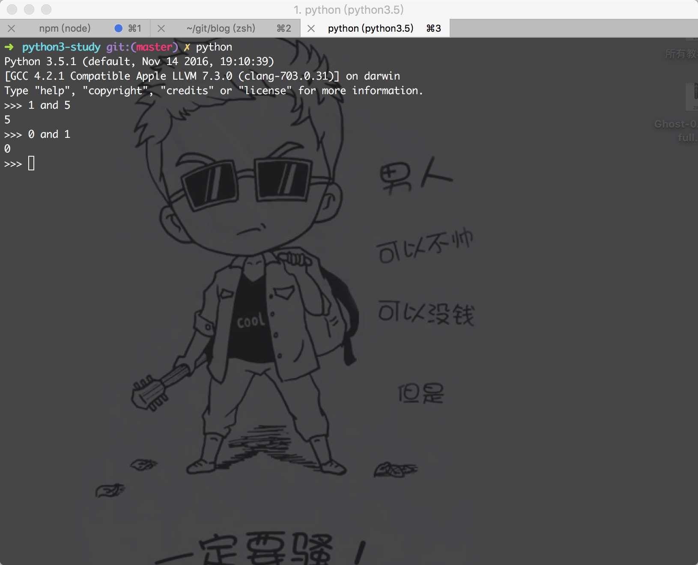
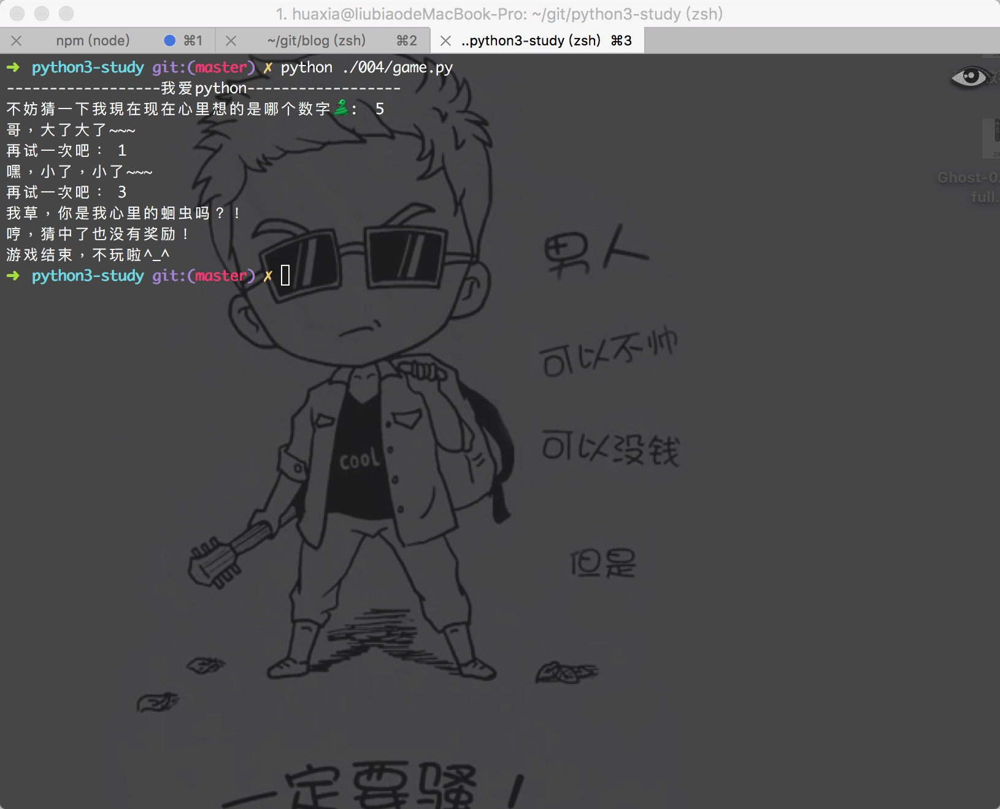
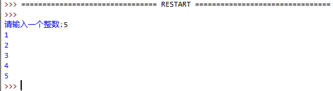
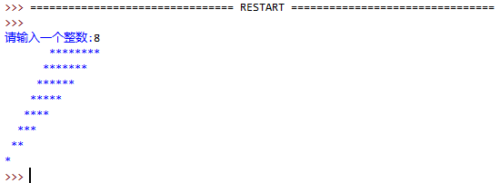
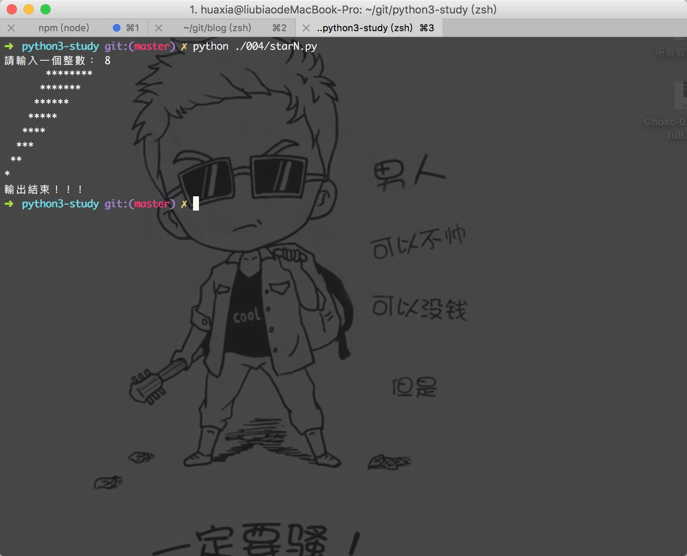

学习Python 004
測試題：
0.请问以下代码会打印多少次“I love you！”
while 'C':
print('I love you！')
會一直打印，以為 'C'是一直成立的，程序進入死循環
1.请问以下代码会打印多少次“I love you！”
i = 10
while i:
print('I love you！')
i = i - 1
會打印10次，當i減到0時，程序while條件不成立，退出程序
2.请写出与 10 < cost < 50 等价的表达式
10 < cost and cost < 50
3.Python3 中，一行可以书写多个语句吗？
可以，語句之間用分號;隔開即可
4.Python3 中，一个语句可以分成多行书写吗？
可以，一行过长的语句可以使用反斜杠或者括号分解成几行，例如
>>> 3 > 4 and \
1 < 2
>>> ( 3 > 4 and
1 < 2 )
5.【该题针对有C或C++基础的朋友】请问Python的 and 操作符 和C语言的 && 操作符 有何不同？
沒有區別，都是邏輯與操作
6.听说过“短路逻辑（short-circuit logic）”吗？

逻辑操作符有个有趣的特性：在不需要求值的时候不进行操作。这么说可能比较“高深”，举个例子，表达式 x and y，需要 x 和 y 两个变量同时为真(True)的时候，结果才为真。因此，如果当 x 变量得知是假(False)的时候，表达式就会立刻返回 False，而不用去管 y 变量的值。
这种行为被称为短路逻辑（short-circuit logic）或者惰性求值（lazy evaluation），这种行为同样也应用与 or 操作符。
实际上，Python 的做法是如果 x 为假，表达式会返回 x 的值(0)，否则它就会返回 y 的值（例子参考上面截圖）。
动动手:
0.完善第二个改进要求（为用户提供三次机会尝试，机会用完或者用户猜中答案均退出循环）并改进學習教程中的代码。
import random
times = 3
secret = random.randint(1, 10)
print('------------------我爱python------------------')
# 这里先给guess赋值（赋一个绝对不等于secret的值）
guess = 0
# print()默认是打印完字符串会自动添加一个换行符，end=" "参数告诉print()用空格代替换行
# 嗯，觉得富有创意的你应该会尝试用 end="🐍"？
print("不妨猜一下我現在现在心里想的是哪个数字🐍 : ", end = " ")
while (guess != secret) and (times > 0):
temp = input()
guess = int(temp)
times = times - 1 # 用户每输入一次，可用机会就-1
if guess == secret:
print("我草，你是我心里的蛔虫吗？！")
print("哼，猜中了也没有奖励！")
else:
if guess > secret:
print("哥，大了大了~<del>")
else:
print("嘿，小了，小了</del>~")
if times > 0:
print("再试一次吧：", end=" ")
else:
print("机会用光咯T_T")
print("游戏结束，不玩啦^_^")

1.尝试写代码实现以下截图功能：

print('請輸入一個整數：', end = ' ')
n = input()
n = int(n)
i = 1
while i <= n:
print(i)
i += 1
print('輸出結束！！！')

2.尝试写代码实现以下截图功能：

print('請輸入一個整數：', end = ' ')
n = input()
n = int(n)
i = 1
while i <= n:
print(' ' * (n - i) + '*' * (n - i + 1))
i += 1
print('輸出結束！！！')


微信打賞

支付寶打賞